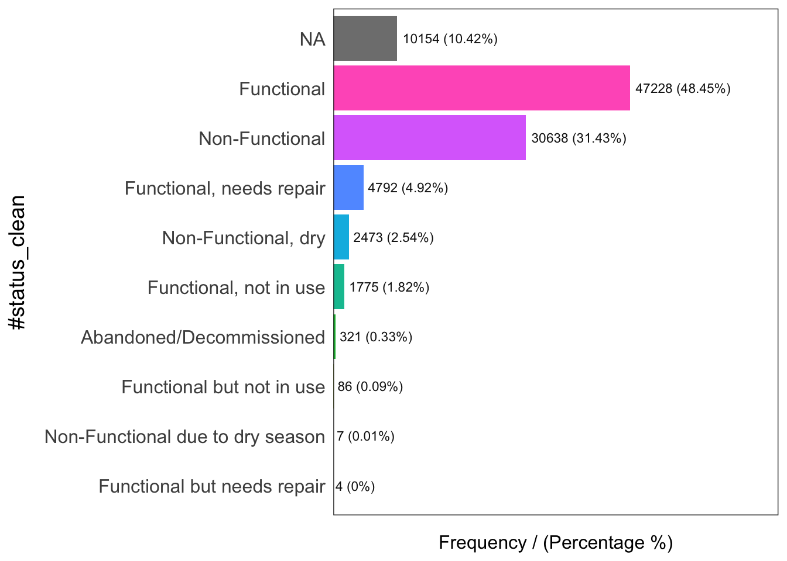
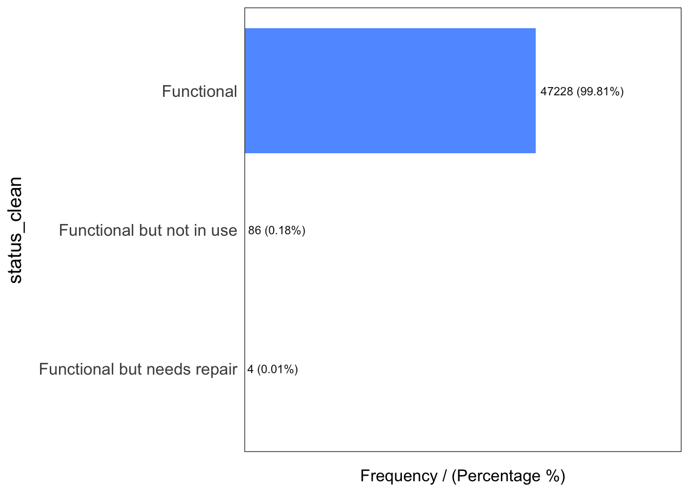

<!DOCTYPE html>
<html xmlns="http://www.w3.org/1999/xhtml" lang="en" xml:lang="en"><head>

<meta charset="utf-8">
<meta name="generator" content="quarto-1.2.269">

<meta name="viewport" content="width=device-width, initial-scale=1.0, user-scalable=yes">


<title>IS415_GAA – inclass2</title>
<style>
code{white-space: pre-wrap;}
span.smallcaps{font-variant: small-caps;}
div.columns{display: flex; gap: min(4vw, 1.5em);}
div.column{flex: auto; overflow-x: auto;}
div.hanging-indent{margin-left: 1.5em; text-indent: -1.5em;}
ul.task-list{list-style: none;}
ul.task-list li input[type="checkbox"] {
  width: 0.8em;
  margin: 0 0.8em 0.2em -1.6em;
  vertical-align: middle;
}
pre > code.sourceCode { white-space: pre; position: relative; }
pre > code.sourceCode > span { display: inline-block; line-height: 1.25; }
pre > code.sourceCode > span:empty { height: 1.2em; }
.sourceCode { overflow: visible; }
code.sourceCode > span { color: inherit; text-decoration: inherit; }
div.sourceCode { margin: 1em 0; }
pre.sourceCode { margin: 0; }
@media screen {
div.sourceCode { overflow: auto; }
}
@media print {
pre > code.sourceCode { white-space: pre-wrap; }
pre > code.sourceCode > span { text-indent: -5em; padding-left: 5em; }
}
pre.numberSource code
  { counter-reset: source-line 0; }
pre.numberSource code > span
  { position: relative; left: -4em; counter-increment: source-line; }
pre.numberSource code > span > a:first-child::before
  { content: counter(source-line);
    position: relative; left: -1em; text-align: right; vertical-align: baseline;
    border: none; display: inline-block;
    -webkit-touch-callout: none; -webkit-user-select: none;
    -khtml-user-select: none; -moz-user-select: none;
    -ms-user-select: none; user-select: none;
    padding: 0 4px; width: 4em;
    color: #aaaaaa;
  }
pre.numberSource { margin-left: 3em; border-left: 1px solid #aaaaaa;  padding-left: 4px; }
div.sourceCode
  {   }
@media screen {
pre > code.sourceCode > span > a:first-child::before { text-decoration: underline; }
}
code span.al { color: #ff0000; font-weight: bold; } /* Alert */
code span.an { color: #60a0b0; font-weight: bold; font-style: italic; } /* Annotation */
code span.at { color: #7d9029; } /* Attribute */
code span.bn { color: #40a070; } /* BaseN */
code span.bu { color: #008000; } /* BuiltIn */
code span.cf { color: #007020; font-weight: bold; } /* ControlFlow */
code span.ch { color: #4070a0; } /* Char */
code span.cn { color: #880000; } /* Constant */
code span.co { color: #60a0b0; font-style: italic; } /* Comment */
code span.cv { color: #60a0b0; font-weight: bold; font-style: italic; } /* CommentVar */
code span.do { color: #ba2121; font-style: italic; } /* Documentation */
code span.dt { color: #902000; } /* DataType */
code span.dv { color: #40a070; } /* DecVal */
code span.er { color: #ff0000; font-weight: bold; } /* Error */
code span.ex { } /* Extension */
code span.fl { color: #40a070; } /* Float */
code span.fu { color: #06287e; } /* Function */
code span.im { color: #008000; font-weight: bold; } /* Import */
code span.in { color: #60a0b0; font-weight: bold; font-style: italic; } /* Information */
code span.kw { color: #007020; font-weight: bold; } /* Keyword */
code span.op { color: #666666; } /* Operator */
code span.ot { color: #007020; } /* Other */
code span.pp { color: #bc7a00; } /* Preprocessor */
code span.sc { color: #4070a0; } /* SpecialChar */
code span.ss { color: #bb6688; } /* SpecialString */
code span.st { color: #4070a0; } /* String */
code span.va { color: #19177c; } /* Variable */
code span.vs { color: #4070a0; } /* VerbatimString */
code span.wa { color: #60a0b0; font-weight: bold; font-style: italic; } /* Warning */
</style>


<script src="../../site_libs/quarto-nav/quarto-nav.js"></script>
<script src="../../site_libs/quarto-nav/headroom.min.js"></script>
<script src="../../site_libs/clipboard/clipboard.min.js"></script>
<script src="../../site_libs/quarto-search/autocomplete.umd.js"></script>
<script src="../../site_libs/quarto-search/fuse.min.js"></script>
<script src="../../site_libs/quarto-search/quarto-search.js"></script>
<meta name="quarto:offset" content="../../">
<script src="../../site_libs/quarto-html/quarto.js"></script>
<script src="../../site_libs/quarto-html/popper.min.js"></script>
<script src="../../site_libs/quarto-html/tippy.umd.min.js"></script>
<script src="../../site_libs/quarto-html/anchor.min.js"></script>
<link href="../../site_libs/quarto-html/tippy.css" rel="stylesheet">
<link href="../../site_libs/quarto-html/quarto-syntax-highlighting.css" rel="stylesheet" id="quarto-text-highlighting-styles">
<script src="../../site_libs/bootstrap/bootstrap.min.js"></script>
<link href="../../site_libs/bootstrap/bootstrap-icons.css" rel="stylesheet">
<link href="../../site_libs/bootstrap/bootstrap.min.css" rel="stylesheet" id="quarto-bootstrap" data-mode="light">
<script id="quarto-search-options" type="application/json">{
  "location": "navbar",
  "copy-button": false,
  "collapse-after": 3,
  "panel-placement": "end",
  "type": "overlay",
  "limit": 20,
  "language": {
    "search-no-results-text": "No results",
    "search-matching-documents-text": "matching documents",
    "search-copy-link-title": "Copy link to search",
    "search-hide-matches-text": "Hide additional matches",
    "search-more-match-text": "more match in this document",
    "search-more-matches-text": "more matches in this document",
    "search-clear-button-title": "Clear",
    "search-detached-cancel-button-title": "Cancel",
    "search-submit-button-title": "Submit"
  }
}</script>


<link rel="stylesheet" href="../../styles.css">
</head>

<body class="nav-fixed">

<div id="quarto-search-results"></div>
  <header id="quarto-header" class="headroom fixed-top">
    <nav class="navbar navbar-expand-lg navbar-dark ">
      <div class="navbar-container container-fluid">
      <div class="navbar-brand-container">
    <a class="navbar-brand" href="../../index.html">
    <span class="navbar-title">IS415_GAA</span>
    </a>
  </div>
          <button class="navbar-toggler" type="button" data-bs-toggle="collapse" data-bs-target="#navbarCollapse" aria-controls="navbarCollapse" aria-expanded="false" aria-label="Toggle navigation" onclick="if (window.quartoToggleHeadroom) { window.quartoToggleHeadroom(); }">
  <span class="navbar-toggler-icon"></span>
</button>
          <div class="collapse navbar-collapse" id="navbarCollapse">
            <ul class="navbar-nav navbar-nav-scroll me-auto">
  <li class="nav-item dropdown ">
    <a class="nav-link dropdown-toggle" href="#" id="nav-menu-hands-on-exercise" role="button" data-bs-toggle="dropdown" aria-expanded="false">
 <span class="menu-text">Hands-on Exercise</span>
    </a>
    <ul class="dropdown-menu" aria-labelledby="nav-menu-hands-on-exercise">    
        <li>
    <a class="dropdown-item" href="../.././Hands_On_Ex/Hands_On_Ex01/Hands_On_Ex01.html">
 <span class="dropdown-text">Hand-on Exercise 1</span></a>
  </li>  
    </ul>
  </li>
  <li class="nav-item dropdown ">
    <a class="nav-link dropdown-toggle" href="#" id="nav-menu-in-class-exercise" role="button" data-bs-toggle="dropdown" aria-expanded="false">
 <span class="menu-text">In Class Exercise</span>
    </a>
    <ul class="dropdown-menu" aria-labelledby="nav-menu-in-class-exercise">    
        <li>
    <a class="dropdown-item" href="../.././InClass/InClassWeek2/InClass2.html">
 <span class="dropdown-text">In Class Exercise 2</span></a>
  </li>  
        <li>
    <a class="dropdown-item" href="../.././InClass/InClassWeek3/InClass3.html">
 <span class="dropdown-text">In Class Exercise 3</span></a>
  </li>  
    </ul>
  </li>
</ul>
            <ul class="navbar-nav navbar-nav-scroll ms-auto">
  <li class="nav-item">
    <a class="nav-link" href="../../index.html">
 <span class="menu-text">Home</span></a>
  </li>  
  <li class="nav-item">
    <a class="nav-link" href="../../about.html">
 <span class="menu-text">About Page</span></a>
  </li>  
</ul>
              <div id="quarto-search" class="" title="Search"></div>
          </div> <!-- /navcollapse -->
      </div> <!-- /container-fluid -->
    </nav>
</header>
<!-- content -->
<div id="quarto-content" class="quarto-container page-columns page-rows-contents page-layout-article page-navbar">
<!-- sidebar -->
<!-- margin-sidebar -->
    <div id="quarto-margin-sidebar" class="sidebar margin-sidebar">
        
    </div>
<!-- main -->
<main class="content" id="quarto-document-content">


<div class="cell">
<div class="sourceCode cell-code" id="cb1"><pre class="sourceCode r code-with-copy"><code class="sourceCode r"><span id="cb1-1"><a href="#cb1-1" aria-hidden="true" tabindex="-1"></a>pacman<span class="sc">::</span><span class="fu">p_load</span>(sf, tidyverse, funModeling)</span>
<span id="cb1-2"><a href="#cb1-2" aria-hidden="true" tabindex="-1"></a></span>
<span id="cb1-3"><a href="#cb1-3" aria-hidden="true" tabindex="-1"></a>NGA <span class="ot">&lt;-</span> <span class="fu">st_read</span>(<span class="st">"./Data/geospatial/"</span>,</span>
<span id="cb1-4"><a href="#cb1-4" aria-hidden="true" tabindex="-1"></a>               <span class="at">layer =</span> <span class="st">"nga_admbnda_adm2_osgof_20190417"</span>) <span class="sc">%&gt;%</span></span>
<span id="cb1-5"><a href="#cb1-5" aria-hidden="true" tabindex="-1"></a><span class="fu">st_transform</span>(<span class="at">crs =</span> <span class="dv">26392</span>)</span></code><button title="Copy to Clipboard" class="code-copy-button"><i class="bi"></i></button></pre></div>
<div class="cell-output cell-output-stdout">
<pre><code>Reading layer `nga_admbnda_adm2_osgof_20190417' from data source 
  `/Users/shaythuram/Desktop/Geospatial Analytics and Applications/Content/QUARTO SITE/InClass/InClassWeek2/Data/geospatial' 
  using driver `ESRI Shapefile'
Simple feature collection with 774 features and 16 fields
Geometry type: MULTIPOLYGON
Dimension:     XY
Bounding box:  xmin: 2.668534 ymin: 4.273007 xmax: 14.67882 ymax: 13.89442
Geodetic CRS:  WGS 84</code></pre>
</div>
<div class="sourceCode cell-code" id="cb3"><pre class="sourceCode r code-with-copy"><code class="sourceCode r"><span id="cb3-1"><a href="#cb3-1" aria-hidden="true" tabindex="-1"></a>wp_nga <span class="ot">&lt;-</span> <span class="fu">read_csv</span>(<span class="st">"./Data/aspatial/WPdx.csv"</span>) <span class="sc">%&gt;%</span></span>
<span id="cb3-2"><a href="#cb3-2" aria-hidden="true" tabindex="-1"></a><span class="fu">filter</span>(<span class="st">`</span><span class="at">#clean_country_name</span><span class="st">`</span> <span class="sc">==</span> <span class="st">"Nigeria"</span>)</span></code><button title="Copy to Clipboard" class="code-copy-button"><i class="bi"></i></button></pre></div>
<div class="cell-output cell-output-stderr">
<pre><code>Warning: One or more parsing issues, call `problems()` on your data frame for details,
e.g.:
  dat &lt;- vroom(...)
  problems(dat)</code></pre>
</div>
<div class="cell-output cell-output-stderr">
<pre><code>Rows: 426774 Columns: 74
── Column specification ────────────────────────────────────────────────────────
Delimiter: ","
chr (46): #source, #report_date, #status_id, #water_source_clean, #water_sou...
dbl (23): row_id, #lat_deg, #lon_deg, #install_year, #fecal_coliform_value, ...
lgl  (5): #rehab_year, #rehabilitator, is_urban, latest_record, is_duplicate

ℹ Use `spec()` to retrieve the full column specification for this data.
ℹ Specify the column types or set `show_col_types = FALSE` to quiet this message.</code></pre>
</div>
<div class="sourceCode cell-code" id="cb6"><pre class="sourceCode r code-with-copy"><code class="sourceCode r"><span id="cb6-1"><a href="#cb6-1" aria-hidden="true" tabindex="-1"></a>wp_nga<span class="sc">$</span>Geometry <span class="ot">=</span> <span class="fu">st_as_sfc</span>(wp_nga<span class="sc">$</span><span class="st">`</span><span class="at">New Georeferenced Column</span><span class="st">`</span>)</span>
<span id="cb6-2"><a href="#cb6-2" aria-hidden="true" tabindex="-1"></a></span>
<span id="cb6-3"><a href="#cb6-3" aria-hidden="true" tabindex="-1"></a></span>
<span id="cb6-4"><a href="#cb6-4" aria-hidden="true" tabindex="-1"></a>wp_sf <span class="ot">&lt;-</span> <span class="fu">st_sf</span>(wp_nga, <span class="at">crs=</span><span class="dv">4326</span>)</span>
<span id="cb6-5"><a href="#cb6-5" aria-hidden="true" tabindex="-1"></a>wp_sf <span class="ot">&lt;-</span> wp_sf <span class="sc">%&gt;%</span><span class="fu">st_transform</span>(<span class="at">crs =</span> <span class="dv">26392</span>)</span>
<span id="cb6-6"><a href="#cb6-6" aria-hidden="true" tabindex="-1"></a></span>
<span id="cb6-7"><a href="#cb6-7" aria-hidden="true" tabindex="-1"></a>NGA <span class="ot">&lt;-</span> NGA <span class="sc">%&gt;%</span><span class="fu">select</span>(<span class="fu">c</span>(<span class="dv">3</span><span class="sc">:</span><span class="dv">4</span>, <span class="dv">8</span><span class="sc">:</span><span class="dv">9</span>))</span>
<span id="cb6-8"><a href="#cb6-8" aria-hidden="true" tabindex="-1"></a>NGA<span class="sc">$</span>ADM2_EN[<span class="fu">duplicated</span>(NGA<span class="sc">$</span>ADM2_EN)<span class="sc">==</span><span class="cn">TRUE</span>]</span></code><button title="Copy to Clipboard" class="code-copy-button"><i class="bi"></i></button></pre></div>
<div class="cell-output cell-output-stdout">
<pre><code>[1] "Bassa"    "Ifelodun" "Irepodun" "Nasarawa" "Obi"      "Surulere"</code></pre>
</div>
<div class="sourceCode cell-code" id="cb8"><pre class="sourceCode r code-with-copy"><code class="sourceCode r"><span id="cb8-1"><a href="#cb8-1" aria-hidden="true" tabindex="-1"></a>NGA<span class="sc">$</span>ADM2_EN[<span class="dv">94</span>] <span class="ot">&lt;-</span> <span class="st">"Bassa, Kogi"</span></span>
<span id="cb8-2"><a href="#cb8-2" aria-hidden="true" tabindex="-1"></a>NGA<span class="sc">$</span>ADM2_EN[<span class="dv">95</span>] <span class="ot">&lt;-</span> <span class="st">"Bassa, Plateau"</span></span>
<span id="cb8-3"><a href="#cb8-3" aria-hidden="true" tabindex="-1"></a>NGA<span class="sc">$</span>ADM2_EN[<span class="dv">304</span>] <span class="ot">&lt;-</span> <span class="st">"Ifelodun, Kwara"</span></span>
<span id="cb8-4"><a href="#cb8-4" aria-hidden="true" tabindex="-1"></a>NGA<span class="sc">$</span>ADM2_EN[<span class="dv">305</span>] <span class="ot">&lt;-</span> <span class="st">"Ifelodun, Osun"</span></span>
<span id="cb8-5"><a href="#cb8-5" aria-hidden="true" tabindex="-1"></a>NGA<span class="sc">$</span>ADM2_EN[<span class="dv">355</span>] <span class="ot">&lt;-</span> <span class="st">"Irepodun, Kwara"</span></span>
<span id="cb8-6"><a href="#cb8-6" aria-hidden="true" tabindex="-1"></a>NGA<span class="sc">$</span>ADM2_EN[<span class="dv">356</span>] <span class="ot">&lt;-</span> <span class="st">"Irepodun, Osun"</span></span>
<span id="cb8-7"><a href="#cb8-7" aria-hidden="true" tabindex="-1"></a>NGA<span class="sc">$</span>ADM2_EN[<span class="dv">519</span>] <span class="ot">&lt;-</span> <span class="st">"Nasarawa, Kano"</span></span>
<span id="cb8-8"><a href="#cb8-8" aria-hidden="true" tabindex="-1"></a>NGA<span class="sc">$</span>ADM2_EN[<span class="dv">520</span>] <span class="ot">&lt;-</span> <span class="st">"Nasarawa, Nasarawa"</span></span>
<span id="cb8-9"><a href="#cb8-9" aria-hidden="true" tabindex="-1"></a>NGA<span class="sc">$</span>ADM2_EN[<span class="dv">546</span>] <span class="ot">&lt;-</span> <span class="st">"Obi, Benue"</span></span>
<span id="cb8-10"><a href="#cb8-10" aria-hidden="true" tabindex="-1"></a>NGA<span class="sc">$</span>ADM2_EN[<span class="dv">547</span>] <span class="ot">&lt;-</span> <span class="st">"Obi, Nasarawa"</span></span>
<span id="cb8-11"><a href="#cb8-11" aria-hidden="true" tabindex="-1"></a>NGA<span class="sc">$</span>ADM2_EN[<span class="dv">693</span>] <span class="ot">&lt;-</span> <span class="st">"Surulere, Lagos"</span></span>
<span id="cb8-12"><a href="#cb8-12" aria-hidden="true" tabindex="-1"></a>NGA<span class="sc">$</span>ADM2_EN[<span class="dv">694</span>] <span class="ot">&lt;-</span> <span class="st">"Surulere, Oyo"</span></span>
<span id="cb8-13"><a href="#cb8-13" aria-hidden="true" tabindex="-1"></a></span>
<span id="cb8-14"><a href="#cb8-14" aria-hidden="true" tabindex="-1"></a></span>
<span id="cb8-15"><a href="#cb8-15" aria-hidden="true" tabindex="-1"></a>NGA<span class="sc">$</span>ADM2_EN[<span class="fu">duplicated</span>(NGA<span class="sc">$</span>ADM2_EN)<span class="sc">==</span><span class="cn">TRUE</span>]</span></code><button title="Copy to Clipboard" class="code-copy-button"><i class="bi"></i></button></pre></div>
<div class="cell-output cell-output-stdout">
<pre><code>character(0)</code></pre>
</div>
</div>
<div class="cell">
<div class="sourceCode cell-code" id="cb10"><pre class="sourceCode r code-with-copy"><code class="sourceCode r"><span id="cb10-1"><a href="#cb10-1" aria-hidden="true" tabindex="-1"></a><span class="fu">freq</span>(<span class="at">data =</span> wp_sf,</span>
<span id="cb10-2"><a href="#cb10-2" aria-hidden="true" tabindex="-1"></a>     <span class="at">input =</span> <span class="st">'#status_clean'</span>)</span></code><button title="Copy to Clipboard" class="code-copy-button"><i class="bi"></i></button></pre></div>
<div class="cell-output cell-output-stderr">
<pre><code>Warning: The `&lt;scale&gt;` argument of `guides()` cannot be `FALSE`. Use "none" instead as
of ggplot2 3.3.4.
ℹ The deprecated feature was likely used in the funModeling package.
  Please report the issue at &lt;]8;;https://github.com/pablo14/funModeling/issueshttps://github.com/pablo14/funModeling/issues]8;;&gt;.</code></pre>
</div>
<div class="cell-output-display">
<p></p>
</div>
<div class="cell-output cell-output-stdout">
<pre><code>                      #status_clean frequency percentage cumulative_perc
1                        Functional     47228      48.45           48.45
2                    Non-Functional     30638      31.43           79.88
3                              &lt;NA&gt;     10154      10.42           90.30
4          Functional, needs repair      4792       4.92           95.22
5               Non-Functional, dry      2473       2.54           97.76
6            Functional, not in use      1775       1.82           99.58
7          Abandoned/Decommissioned       321       0.33           99.91
8         Functional but not in use        86       0.09          100.00
9  Non-Functional due to dry season         7       0.01          100.01
10      Functional but needs repair         4       0.00          100.00</code></pre>
</div>
</div>
<div class="cell">
<div class="sourceCode cell-code" id="cb13"><pre class="sourceCode r code-with-copy"><code class="sourceCode r"><span id="cb13-1"><a href="#cb13-1" aria-hidden="true" tabindex="-1"></a>wp_sf_nga <span class="ot">&lt;-</span> wp_sf <span class="sc">%&gt;%</span> </span>
<span id="cb13-2"><a href="#cb13-2" aria-hidden="true" tabindex="-1"></a>  <span class="fu">rename</span>(<span class="at">status_clean =</span> <span class="st">'#status_clean'</span>) <span class="sc">%&gt;%</span></span>
<span id="cb13-3"><a href="#cb13-3" aria-hidden="true" tabindex="-1"></a>  <span class="fu">select</span>(status_clean) <span class="sc">%&gt;%</span></span>
<span id="cb13-4"><a href="#cb13-4" aria-hidden="true" tabindex="-1"></a>  <span class="fu">mutate</span>(<span class="at">status_clean =</span> <span class="fu">replace_na</span>(</span>
<span id="cb13-5"><a href="#cb13-5" aria-hidden="true" tabindex="-1"></a>    status_clean, <span class="st">"unknown"</span>))</span>
<span id="cb13-6"><a href="#cb13-6" aria-hidden="true" tabindex="-1"></a></span>
<span id="cb13-7"><a href="#cb13-7" aria-hidden="true" tabindex="-1"></a></span>
<span id="cb13-8"><a href="#cb13-8" aria-hidden="true" tabindex="-1"></a></span>
<span id="cb13-9"><a href="#cb13-9" aria-hidden="true" tabindex="-1"></a>wp_functional <span class="ot">&lt;-</span> wp_sf_nga <span class="sc">%&gt;%</span></span>
<span id="cb13-10"><a href="#cb13-10" aria-hidden="true" tabindex="-1"></a>  <span class="fu">filter</span>(status_clean <span class="sc">%in%</span></span>
<span id="cb13-11"><a href="#cb13-11" aria-hidden="true" tabindex="-1"></a>           <span class="fu">c</span>(<span class="st">"Functional"</span>,</span>
<span id="cb13-12"><a href="#cb13-12" aria-hidden="true" tabindex="-1"></a>             <span class="st">"Functional but not in use"</span>,</span>
<span id="cb13-13"><a href="#cb13-13" aria-hidden="true" tabindex="-1"></a>             <span class="st">"Functional but needs repair"</span>))</span>
<span id="cb13-14"><a href="#cb13-14" aria-hidden="true" tabindex="-1"></a></span>
<span id="cb13-15"><a href="#cb13-15" aria-hidden="true" tabindex="-1"></a></span>
<span id="cb13-16"><a href="#cb13-16" aria-hidden="true" tabindex="-1"></a></span>
<span id="cb13-17"><a href="#cb13-17" aria-hidden="true" tabindex="-1"></a>wp_nonfunctional <span class="ot">&lt;-</span> wp_sf_nga <span class="sc">%&gt;%</span></span>
<span id="cb13-18"><a href="#cb13-18" aria-hidden="true" tabindex="-1"></a>  <span class="fu">filter</span>(status_clean <span class="sc">%in%</span></span>
<span id="cb13-19"><a href="#cb13-19" aria-hidden="true" tabindex="-1"></a>           <span class="fu">c</span>(<span class="st">"Abandoned/Decommissioned"</span>,</span>
<span id="cb13-20"><a href="#cb13-20" aria-hidden="true" tabindex="-1"></a>             <span class="st">"Abandoned"</span>,</span>
<span id="cb13-21"><a href="#cb13-21" aria-hidden="true" tabindex="-1"></a>             <span class="st">"Non-Functional due to dry season"</span>,</span>
<span id="cb13-22"><a href="#cb13-22" aria-hidden="true" tabindex="-1"></a>             <span class="st">"Non-Functional"</span>,</span>
<span id="cb13-23"><a href="#cb13-23" aria-hidden="true" tabindex="-1"></a>             <span class="st">"Non functional due to dry season"</span>))</span>
<span id="cb13-24"><a href="#cb13-24" aria-hidden="true" tabindex="-1"></a></span>
<span id="cb13-25"><a href="#cb13-25" aria-hidden="true" tabindex="-1"></a></span>
<span id="cb13-26"><a href="#cb13-26" aria-hidden="true" tabindex="-1"></a>wp_unknown <span class="ot">&lt;-</span> wp_sf_nga <span class="sc">%&gt;%</span></span>
<span id="cb13-27"><a href="#cb13-27" aria-hidden="true" tabindex="-1"></a>  <span class="fu">filter</span>(status_clean <span class="sc">==</span> <span class="st">"unknown"</span>)</span>
<span id="cb13-28"><a href="#cb13-28" aria-hidden="true" tabindex="-1"></a></span>
<span id="cb13-29"><a href="#cb13-29" aria-hidden="true" tabindex="-1"></a></span>
<span id="cb13-30"><a href="#cb13-30" aria-hidden="true" tabindex="-1"></a>NGA_wp <span class="ot">&lt;-</span> NGA <span class="sc">%&gt;%</span> </span>
<span id="cb13-31"><a href="#cb13-31" aria-hidden="true" tabindex="-1"></a>  <span class="fu">mutate</span>(<span class="st">`</span><span class="at">total_wp</span><span class="st">`</span> <span class="ot">=</span> <span class="fu">lengths</span>(</span>
<span id="cb13-32"><a href="#cb13-32" aria-hidden="true" tabindex="-1"></a>    <span class="fu">st_intersects</span>(NGA, wp_sf_nga))) <span class="sc">%&gt;%</span></span>
<span id="cb13-33"><a href="#cb13-33" aria-hidden="true" tabindex="-1"></a>  <span class="fu">mutate</span>(<span class="st">`</span><span class="at">wp_functional</span><span class="st">`</span> <span class="ot">=</span> <span class="fu">lengths</span>(</span>
<span id="cb13-34"><a href="#cb13-34" aria-hidden="true" tabindex="-1"></a>    <span class="fu">st_intersects</span>(NGA, wp_functional))) <span class="sc">%&gt;%</span></span>
<span id="cb13-35"><a href="#cb13-35" aria-hidden="true" tabindex="-1"></a>  <span class="fu">mutate</span>(<span class="st">`</span><span class="at">wp_nonfunctional</span><span class="st">`</span> <span class="ot">=</span> <span class="fu">lengths</span>(</span>
<span id="cb13-36"><a href="#cb13-36" aria-hidden="true" tabindex="-1"></a>    <span class="fu">st_intersects</span>(NGA, wp_nonfunctional))) <span class="sc">%&gt;%</span></span>
<span id="cb13-37"><a href="#cb13-37" aria-hidden="true" tabindex="-1"></a>  <span class="fu">mutate</span>(<span class="st">`</span><span class="at">wp_unknown</span><span class="st">`</span> <span class="ot">=</span> <span class="fu">lengths</span>(</span>
<span id="cb13-38"><a href="#cb13-38" aria-hidden="true" tabindex="-1"></a>    <span class="fu">st_intersects</span>(NGA, wp_unknown)))</span>
<span id="cb13-39"><a href="#cb13-39" aria-hidden="true" tabindex="-1"></a></span>
<span id="cb13-40"><a href="#cb13-40" aria-hidden="true" tabindex="-1"></a></span>
<span id="cb13-41"><a href="#cb13-41" aria-hidden="true" tabindex="-1"></a></span>
<span id="cb13-42"><a href="#cb13-42" aria-hidden="true" tabindex="-1"></a><span class="fu">ggplot</span>(<span class="at">data =</span> NGA_wp,</span>
<span id="cb13-43"><a href="#cb13-43" aria-hidden="true" tabindex="-1"></a>       <span class="fu">aes</span>(<span class="at">x =</span> total_wp)) <span class="sc">+</span> </span>
<span id="cb13-44"><a href="#cb13-44" aria-hidden="true" tabindex="-1"></a>  <span class="fu">geom_histogram</span>(<span class="at">bins=</span><span class="dv">20</span>,</span>
<span id="cb13-45"><a href="#cb13-45" aria-hidden="true" tabindex="-1"></a>                 <span class="at">color=</span><span class="st">"black"</span>,</span>
<span id="cb13-46"><a href="#cb13-46" aria-hidden="true" tabindex="-1"></a>                 <span class="at">fill=</span><span class="st">"light blue"</span>) <span class="sc">+</span></span>
<span id="cb13-47"><a href="#cb13-47" aria-hidden="true" tabindex="-1"></a>  <span class="fu">geom_vline</span>(<span class="fu">aes</span>(<span class="at">xintercept=</span><span class="fu">mean</span>(</span>
<span id="cb13-48"><a href="#cb13-48" aria-hidden="true" tabindex="-1"></a>    total_wp, <span class="at">na.rm=</span>T)),</span>
<span id="cb13-49"><a href="#cb13-49" aria-hidden="true" tabindex="-1"></a>             <span class="at">color=</span><span class="st">"red"</span>, </span>
<span id="cb13-50"><a href="#cb13-50" aria-hidden="true" tabindex="-1"></a>             <span class="at">linetype=</span><span class="st">"dashed"</span>, </span>
<span id="cb13-51"><a href="#cb13-51" aria-hidden="true" tabindex="-1"></a>             <span class="at">size=</span><span class="fl">0.8</span>) <span class="sc">+</span></span>
<span id="cb13-52"><a href="#cb13-52" aria-hidden="true" tabindex="-1"></a>  <span class="fu">ggtitle</span>(<span class="st">"Distribution of total water points by LGA"</span>) <span class="sc">+</span></span>
<span id="cb13-53"><a href="#cb13-53" aria-hidden="true" tabindex="-1"></a>  <span class="fu">xlab</span>(<span class="st">"No. of water points"</span>) <span class="sc">+</span></span>
<span id="cb13-54"><a href="#cb13-54" aria-hidden="true" tabindex="-1"></a>  <span class="fu">ylab</span>(<span class="st">"No. of</span><span class="sc">\n</span><span class="st">LGAs"</span>) <span class="sc">+</span></span>
<span id="cb13-55"><a href="#cb13-55" aria-hidden="true" tabindex="-1"></a>  <span class="fu">theme</span>(<span class="at">axis.title.y=</span><span class="fu">element_text</span>(<span class="at">angle =</span> <span class="dv">0</span>))</span></code><button title="Copy to Clipboard" class="code-copy-button"><i class="bi"></i></button></pre></div>
<div class="cell-output cell-output-stderr">
<pre><code>Warning: Using `size` aesthetic for lines was deprecated in ggplot2 3.4.0.
ℹ Please use `linewidth` instead.</code></pre>
</div>
<div class="cell-output-display">
<p></p>
</div>
</div>
<div class="cell">
<div class="sourceCode cell-code" id="cb15"><pre class="sourceCode r code-with-copy"><code class="sourceCode r"><span id="cb15-1"><a href="#cb15-1" aria-hidden="true" tabindex="-1"></a><span class="fu">write_rds</span>(NGA_wp, <span class="st">"./Data/NGA_wp.rds"</span>)</span></code><button title="Copy to Clipboard" class="code-copy-button"><i class="bi"></i></button></pre></div>
</div>


</main> <!-- /main -->
<script id="quarto-html-after-body" type="application/javascript">
window.document.addEventListener("DOMContentLoaded", function (event) {
  const toggleBodyColorMode = (bsSheetEl) => {
    const mode = bsSheetEl.getAttribute("data-mode");
    const bodyEl = window.document.querySelector("body");
    if (mode === "dark") {
      bodyEl.classList.add("quarto-dark");
      bodyEl.classList.remove("quarto-light");
    } else {
      bodyEl.classList.add("quarto-light");
      bodyEl.classList.remove("quarto-dark");
    }
  }
  const toggleBodyColorPrimary = () => {
    const bsSheetEl = window.document.querySelector("link#quarto-bootstrap");
    if (bsSheetEl) {
      toggleBodyColorMode(bsSheetEl);
    }
  }
  toggleBodyColorPrimary();  
  const icon = "";
  const anchorJS = new window.AnchorJS();
  anchorJS.options = {
    placement: 'right',
    icon: icon
  };
  anchorJS.add('.anchored');
  const clipboard = new window.ClipboardJS('.code-copy-button', {
    target: function(trigger) {
      return trigger.previousElementSibling;
    }
  });
  clipboard.on('success', function(e) {
    // button target
    const button = e.trigger;
    // don't keep focus
    button.blur();
    // flash "checked"
    button.classList.add('code-copy-button-checked');
    var currentTitle = button.getAttribute("title");
    button.setAttribute("title", "Copied!");
    let tooltip;
    if (window.bootstrap) {
      button.setAttribute("data-bs-toggle", "tooltip");
      button.setAttribute("data-bs-placement", "left");
      button.setAttribute("data-bs-title", "Copied!");
      tooltip = new bootstrap.Tooltip(button, 
        { trigger: "manual", 
          customClass: "code-copy-button-tooltip",
          offset: [0, -8]});
      tooltip.show();    
    }
    setTimeout(function() {
      if (tooltip) {
        tooltip.hide();
        button.removeAttribute("data-bs-title");
        button.removeAttribute("data-bs-toggle");
        button.removeAttribute("data-bs-placement");
      }
      button.setAttribute("title", currentTitle);
      button.classList.remove('code-copy-button-checked');
    }, 1000);
    // clear code selection
    e.clearSelection();
  });
  function tippyHover(el, contentFn) {
    const config = {
      allowHTML: true,
      content: contentFn,
      maxWidth: 500,
      delay: 100,
      arrow: false,
      appendTo: function(el) {
          return el.parentElement;
      },
      interactive: true,
      interactiveBorder: 10,
      theme: 'quarto',
      placement: 'bottom-start'
    };
    window.tippy(el, config); 
  }
  const noterefs = window.document.querySelectorAll('a[role="doc-noteref"]');
  for (var i=0; i<noterefs.length; i++) {
    const ref = noterefs[i];
    tippyHover(ref, function() {
      // use id or data attribute instead here
      let href = ref.getAttribute('data-footnote-href') || ref.getAttribute('href');
      try { href = new URL(href).hash; } catch {}
      const id = href.replace(/^#\/?/, "");
      const note = window.document.getElementById(id);
      return note.innerHTML;
    });
  }
  const findCites = (el) => {
    const parentEl = el.parentElement;
    if (parentEl) {
      const cites = parentEl.dataset.cites;
      if (cites) {
        return {
          el,
          cites: cites.split(' ')
        };
      } else {
        return findCites(el.parentElement)
      }
    } else {
      return undefined;
    }
  };
  var bibliorefs = window.document.querySelectorAll('a[role="doc-biblioref"]');
  for (var i=0; i<bibliorefs.length; i++) {
    const ref = bibliorefs[i];
    const citeInfo = findCites(ref);
    if (citeInfo) {
      tippyHover(citeInfo.el, function() {
        var popup = window.document.createElement('div');
        citeInfo.cites.forEach(function(cite) {
          var citeDiv = window.document.createElement('div');
          citeDiv.classList.add('hanging-indent');
          citeDiv.classList.add('csl-entry');
          var biblioDiv = window.document.getElementById('ref-' + cite);
          if (biblioDiv) {
            citeDiv.innerHTML = biblioDiv.innerHTML;
          }
          popup.appendChild(citeDiv);
        });
        return popup.innerHTML;
      });
    }
  }
});
</script>
</div> <!-- /content -->


</body></html>